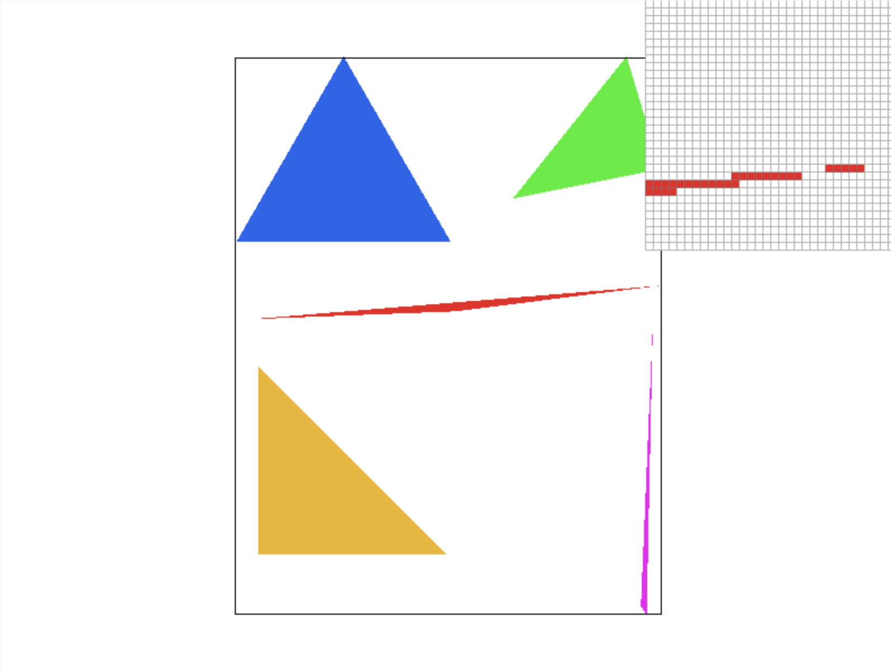
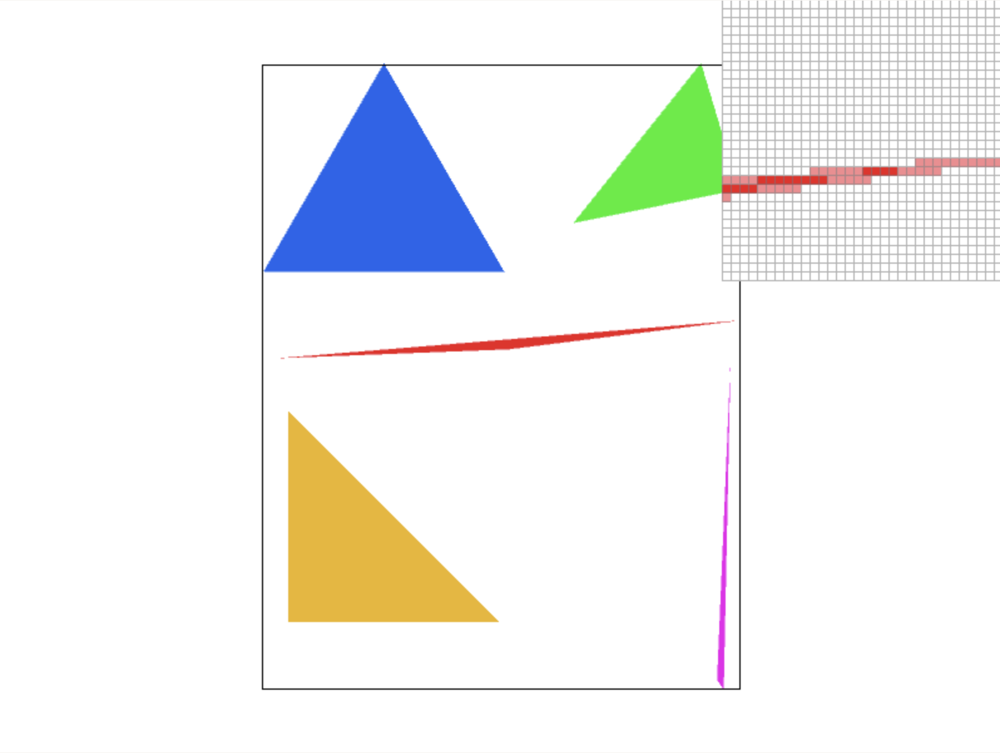
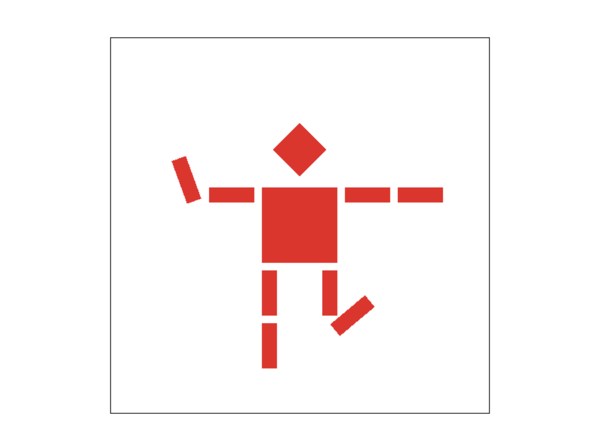

Arushi Somani & Crystal Wang
At a high level, we implemented a basic triangle rasterizer to render svg images, with extensions that allowed for antialiasing via supersampling / pixel sampling / level sampling, as well as color and texture interpolation with barycentric coordinates.
This was a really cool project, especially as an introduction to graphics! We definitely appreciated how it directly applied concepts from lecture - in fact, we felt that our understanding of concepts like mipmaps and bilinear sampling were significantly deepened from doing this assignment. It was also a really interesting experience translating the overarching ideas we learned into actual c++ code. We also really enjoyed poking around at the underlying representations of svg files - we had no idea what they looked like under the hood until we had to create and edit our own!
We rasterize triangles by following by iterating through each pixel that falls within the bounds of the three lines of the triangle with vertices at the given (x, y) pairs and filling that pixel with the provided color. The algorithm we used just checks each sample within the bounding box of the triangle, with nested for loops that run from the minimum to maximum given vertex x and y values, which is no worse than / equivalent to one that checks each sample within the bounding box of the triangle.
For our supersampling algorithm, we added a nested for loop inside
the loops from task 1. We calculate the horizontal and vertical offsets
corresponding to the sampling rate for each pixel in the bounding box of
the triangle, and sample the color at each of those offsets inside the
pixel. After sampling, we update the expanded sample buffer (whose size
we updated to be width * height * sample rate). We created
no new data structures, just modified existing ones (ie. increased size
of sample buffer).
Supersampling is particularly useful for antialiasing, because it essentially gets a better heuristic in finer grain to soften and blur edges between shapes so that the cutoffs are less sharp and jagged. We used supersampling to antialias our triangles by taking more samples per pixel within the bounding box of the triangle to smooth out transitions in colors on the screen, which particularly helped the smooth sharp edges and corners in the images.
In the process of adding a supersampling algorithm to our code, we
had to tweak the rasterization pipeline a bit. When actually putting rgb
values into the frame buffer, we first had to average the rgb values for
the sample_rate samples for each pixel, then actually pass
in those values to the frame buffer. Because we had to expand our sample
buffer size to accommodate all the samples we took for each pixel, we
reoriented the indexing of the sample buffer so that it was ordered in
the manner of
[pixel 1 sample 1, pixel 1 sample 2, … , pixel n sample m].


We observe these resulting differences from the three images with different sample rates because the more samples we take per pixel, the better the final rendered color will blend into the surrounding pixels and the image’s edges will blur out. When we only sample once per pixel, there is clearly no gradual attempt to blend colors (as seen in the pixel inspector), so the corner of the triangle appears very jagged and even discontinuous. On the other hand, for 4 and 16 samples per pixel, we see pixels in the pixel inspector that take on colors between red and white, which allow for a “softer” appearance and more natural edges/lines than just singular sampling can achieve.
Air traffic controller who’s blasting jams through their noise-cancelling headphones: I was trying to angle the left arm up in a waving position and have the right leg kick back at an angle.

Barycentric coordinates are a coordinate system in which any point in
two-dimensional space is described as the weighted combination of the
vertices of some given triangle. These weights are known as
alpha, beta and gamma values of
the given coordinate. The sum of these coordinate weights is always
1.
Pixel sampling is, stated coarsely, the concept of getting Color
(rgb) values for certain pixel locations of a texture. To get the actual
pixel value of a texture is not a complicated process — one just has to
return the texel value of that location. However, pixel
sampling has different methods, and we shall discuss two of them here:
nearest neighbor and bilinear sampling. The idea of nearest neighbor is
to return the color of the nearest texel to the given
location. The idea of bilinear sampling is to get the color of the four
nearest pixels, then return the texel representing their
weighted average. One implementation detail to mention here: The
passed-in argument uv is technically in the range of [0, 1]
– it’s a weight, not an actual measure of the location on the texture
space, and must therefore be scaled by the height and width of the
texture in both cases.
I find that the biggest difference is in when there are sharp lines between two colors — like in the letters in the images above. Notice how the word “Berkeley” looks jagged in nearest sampling, and clearer and smoother in bilinear sampling.
The idea of level-sampling is that, instead of downsampling from a
given texture when we need it, we go ahead and create lower resolution
levels of our texture image. These are known as our mipmap levels. In
level sampling, we mathematically figure out what level of the map we
wish to sample from, and then sample from that level of the mipmap. This
was mainly implemented through Texture::sample and
Texture::get_level. get_level is a helper
function that returns the level of mipmap we should be using given
certain values of uv. sample is a function
that toggles between various level sampling methods, using
get_level to access the necessary information and returning
a sample.
Tradeoff comparisons